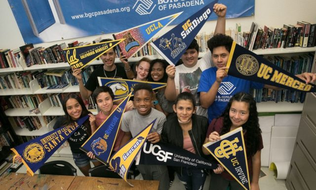
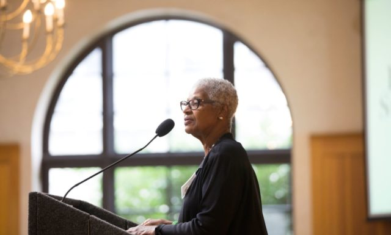
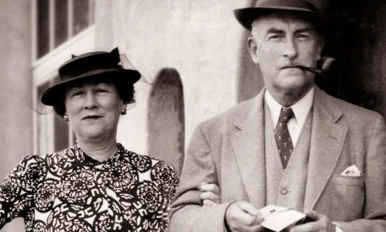

WHO WE ARE
 Established in 1953, the Pasadena Community Foundation is a tax-exempt public charity created by and for the people of Pasadena. We work with individuals, families, and organizations to establish philanthropic funds, create and build endowment funds, and distribute charitable gifts to nonprofit organizations in Pasadena and across the country. In addition to donor-directed grants and scholarships, PCF makes annual grants in six areas: arts and culture, education, environment, health, human services, and youth. These grants are restricted to Pasadena-area nonprofits to enrich the community and provide vital services to vulnerable residents. PCF is Pasadena’s permanent endowment for public good, building hometown legacies that benefit our community now and for decades to come.
COLLABORATE WITH DONORS
We help people with philanthropic interests support the issues they care about now and in the future. Using a variety of fund options and charitable tools, donors — whether individuals, families or organizations — contribute their assets to PCF in order to manage their giving and accomplish their philanthropic goals.
ESTABLISH ENDOWMENTS AND INVEST AND MANAGE CHARITABLE ASSETS
We assist individuals, families, professional advisors, and organizations to establish endowed funds that benefit diverse philanthropic interests, causes, and organizations in perpetuity and build those endowed assets through prudent investment for long-term growth. Our expert financial advisors also provide nonprofits with endowment management services through our Agency Partner Funds program.
PROVIDE GRANTS TO CHARITABLE ORGANIZATIONS
PCF manages a variety of grant programs that support local nonprofit organizations in Pasadena. PCF works with professional advisors to help their clients organize their charitable giving and maximize the impact of their philanthropy through planned giving options, philanthropic counsel, and personalized support.